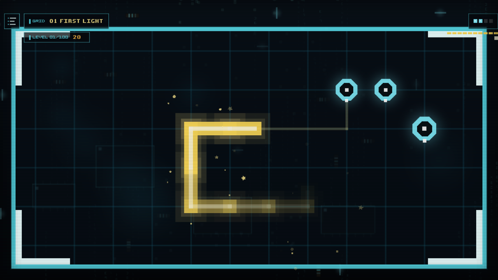
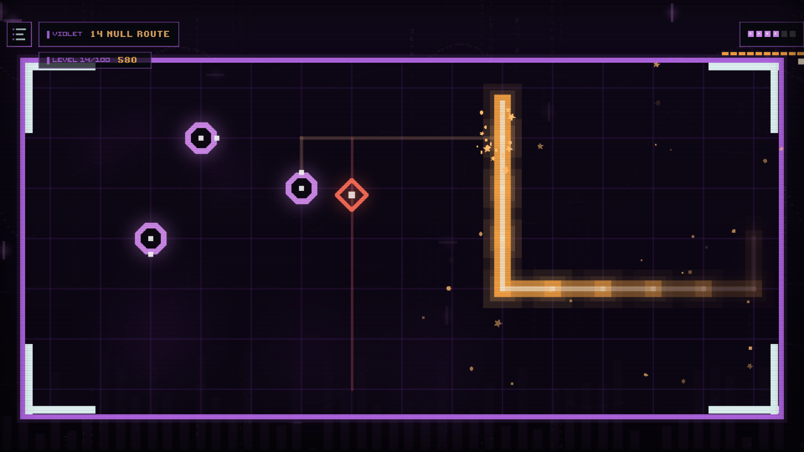
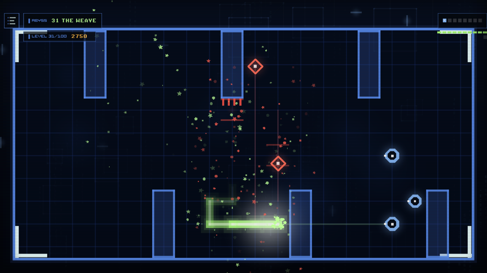
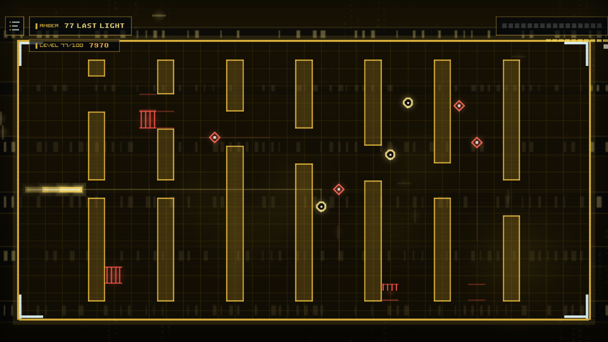
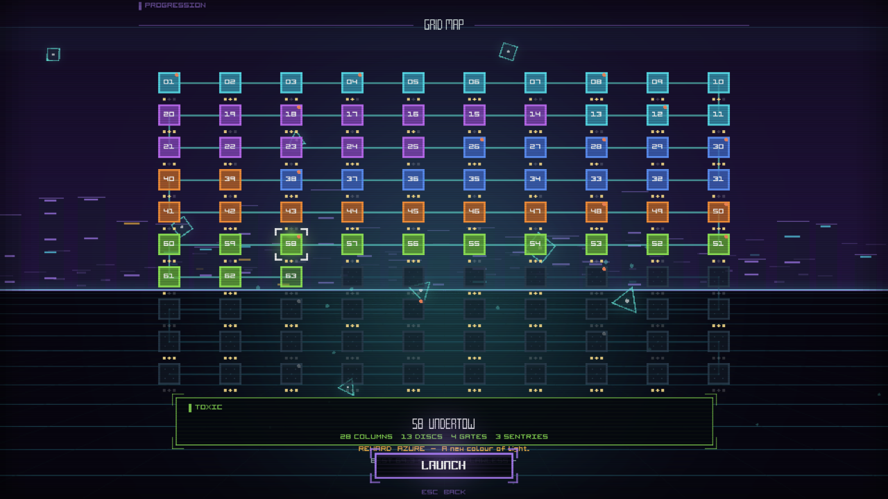
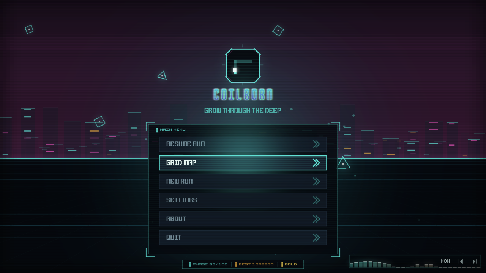
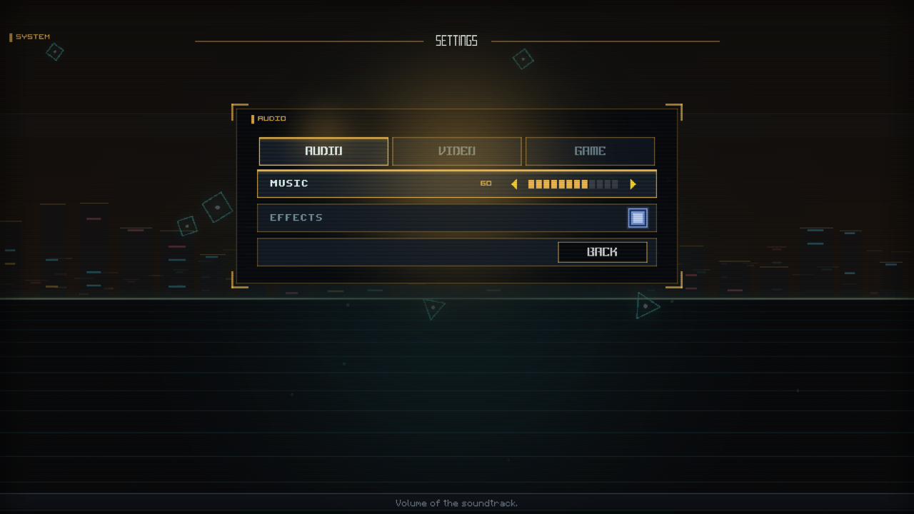

Ninety degrees, always
The cycle glides between cells and the turn snaps at the centre of one. No diagonals, no drift — the wall you leave is perfectly orthogonal, and so is every mistake.
GROW THROUGH THE DEEP
You ride a program. Behind you, a wall of light. Every turn is ninety degrees, every lane is a lane you can die in — and the wall you leave is the one that kills you.
Four sectors, four phases, recorded straight from the game — with its own soundtrack.
Sound on — the music is tracker, the effects are synthesised while it plays
Every sector repaints the whole screen, and every phase has its own grid width and its own world behind the glass.

Phase 01 — a clean grid and one lane to learn
Sector VIOLET — walls, firewalls and a sentry
The wall is long now, and the arena is yours to lose
Sector AMBER — every sector repaints the whole screen
The grid map: 100 phases, badges and records
The main menu
Settings: blur the backdrop, pick your programThe cycle glides between cells and the turn snaps at the centre of one. No diagonals, no drift — the wall you leave is perfectly orthogonal, and so is every mistake.
Each identity disc you absorb makes your wall longer. It never tapers and it never forgives: the arena shrinks with every disc, and it shrinks because of you.
Eight sectors, a hundred phases, each with its own grid width — from twelve columns to forty. They live on a printed circuit you walk node by node, with badges and records on every one.
Brake to half speed, a shield that forgives the first crash of a phase, a boost that eats the meter, and a scan that marks the nearest disc across the grid.
Circuit boards, terminals, skylines, reactor cores, data cubes, oscilloscopes, node graphs and punched tape — a different one behind every phase, and you can blur it if it pulls your eye.
One payment. No ads, no purchases, no accounts, no network code at all. The soundtrack is tracker music and the sound effects are synthesised while you play.